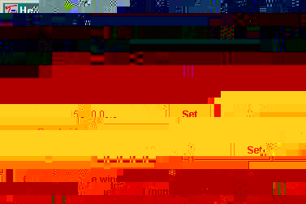

Input Types : ComplexSpectrum
Output Types : ComplexSpectrum
Date : 05 Mar 2001
The user can also choose to smooth the edges of the output bands using a choice of window functions. The functions are those given in WindowFnc. These are useful if the individual filtered spectra are to be inverted back to the time-domain: a sharp cutoff gives unwanted oscillations in the time-domain that are suppressed if the cutoff is smoothed.
The user can also choose to reduce the Nyquist frequency of each of the output sets to their upper-frequency cutoffs, which is half of the given bandwidth. The Nyquist frequency is the highest frequency that can be held in a spectral data set. When the data set is inverted by FFT, the time-domain result will have a sampling frequency that is twice the Nyquist frequency. Thus, if the user reduces the Nyquist frequency when filtering, then the time-domain inversion will be sampled at twice the rate of the upper-frequency cutoff. This ensures that the time-domain set contains no more samples than necessary. Since it is normally the intention of heterodyning to produce a slowly-sampled data set, this option is selected by default.

The first slider chooses the central frequency at which heterodyning is performed, in Hz. Spectral data at this frequency is mapped to zero-frequency in the output data sets.
The second slider chooses the full bandwidth about the heterodyne frequency that will be included in the output data set, in Hz. The output data will extend from zero-frequency up to bandwidth/2.
The third choice is the window function that can be used to smooth the edges of the frequency band when it is output.
The fourth choice is a check box. Select this if you want the Nyquist
frequency of the output data sets to be reduced to bandwidth/2.
The output data set will be a full-bandwidth spectrum with this maximum
frequency. See the discussion above for the meaning
of the Nyquist frequency.
xc(t) = x(t)cos(2*pi*f*t), xs(t) = x(t)sin(2*pi*f*t).One then filters these down to the desired bandwidth B/2, and then resamples the time-series at the rate B, which
The unit HetdyneF does essentially this operation, but it works in the frequency-domain. It takes as input the ComplexSpectrum that is produced by the FFT of the original time-series. It outputs two ComplexSpectrum data sets, which represent the FFTs of xc(t) and xs(t) filtered to the appropriate bandwidth.
While resampling to a slower rate cannot be done in the frequency-domain, it will be performed automatically when the output of HetdyneF is input to the FFT unit, provided the Nyquist option is selected in the parameter window (selected by default). This is because spectral data sets in Triana contain information about the sampling rate of the original time-series data set. This is contained in the Nyquist frequency, as described above.